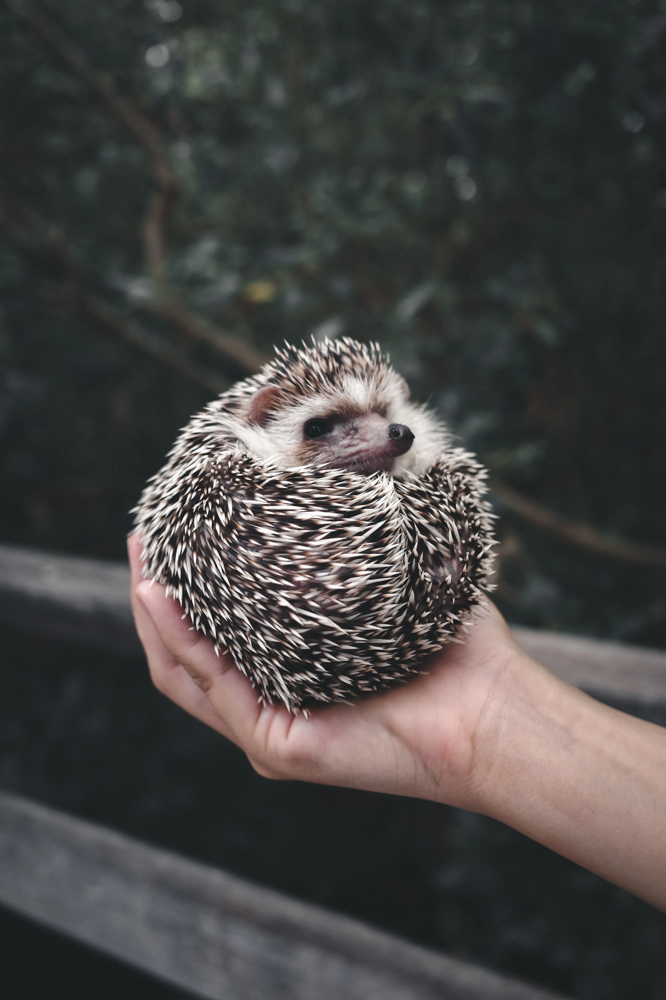

Hedgehog
Derived from Middle English heyghoge in 1450. Heyg because it frequents hedgerows and hoge because of it's piglike snout.
Description
Hedgehogs have an abundance of quills, which are spines made of many hallow hairs made stiff with keratin. The quills are not poisonous nor barbed and do not detach from their body easily. However, an immature hedgehog will go through a process called "quilling," meaning the baby hedgehog will shed its' baby quills, which will then be replaced with adult quills.
|

|
Hedgehogs can roll into a ball for self-defense, causing their quills to point outwards. When a hedgehog rolls into a ball, their quills protect all of their vulnerable features that do not have any quills, such as their face, feet and belly. Some desert hedgehogs have evolved to carry less weight and are more likely to flee or attack an intruder by ramming an intruder with their quills; rolling into a ball is usually a last resort option. |
Most hedgehogs are nocturnal. They sleep for most of the day in shaded areas or dens dug into the ground. All wild hedgehogs can hibernate, but it depends on the temperature, species and access to food.
|
Hedgehogs are vocal creatures and communicate through grunts, snuffles, squeaks and squeals. |
Hedgehog Sounds By Sound Effects |
Hedgehogs sometimes perform a ritual called "anointing." They will lick and bite a new scent and then create a froth in their mouth with that scent, which they will then apply to their quills. It is unknown why a hedgehog anoints but many experts believe that hedgehogs use it as a way to camouflage in a new area.
Hedgehogs have some natural immunity against some snake venom through the erinacine protien in their muscular system. Additionally, hedgehogs have a mutation that helps protect them from an α-neurotoxin snake venom. Their mutation is in their nicotinic acetylcholine receptor which prevents the α-neurotoxin snake venom from binding.
About
Diet |
Hibernation |
Reproduction & Lifespan
|
|---|---|---|
|
|
30°C–35°C range. |
35-58 days. The average litter is 3-4 newborns for large species of hedgehogs and 5-6 newborns for smaller species. In the wild, larger species of hedgehogs have a lifespan of 4-7 years while smaller species have a lifespan of 2-4 years. |
Domestication
|
The african pygmy hedgehog is the most common species of pet
hedgehogs. It is a hybrid of the four-toed hedgehog(Atelerix albiventris) and the North African hedgehog(A. algirus). Long-eared
hedgehogs(Hemiechinus auritus) and Indian long-eared
hedgehogs(H. collaris) are other species of hedgehogs that
are kept as pets. In the wild, hedgehogs cover many miles every night, therefore pet hedgehogs require lots of exercise and must have access to a running wheel. Pet hedgehogs can eat lean chicken, turkey, beef or pork, and a small about of fruit and vegetables. Because a hedgehog's diet needs to be high in protein but low in fat, many experts have found cat food to be a great food source for pet hedgehogs. |
|
Genus & Species
Subfamily Erinaceinae (hedgehogs)
|